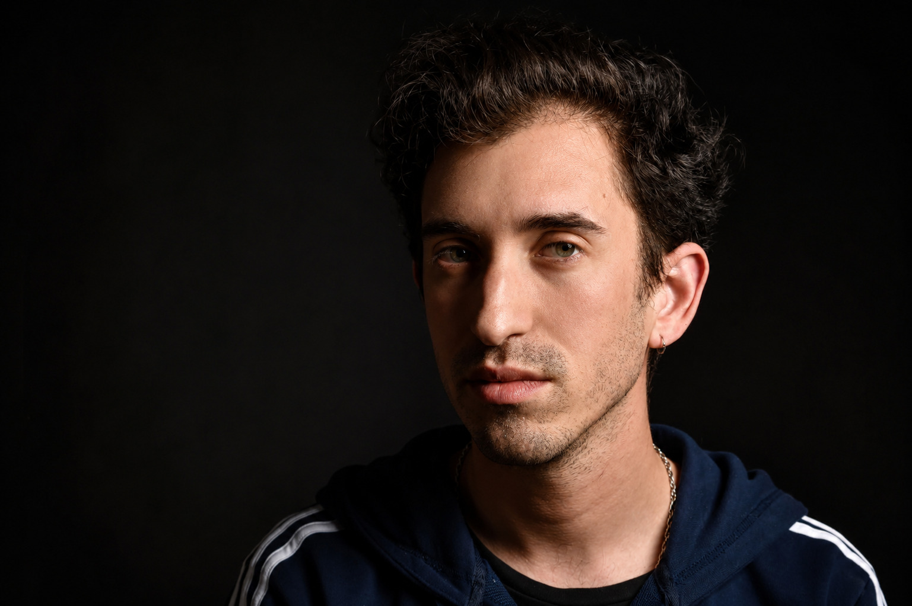

No todos llegan por lo mismo. Decime con qué te identificás y te muestro el camino:
Entiendo la consulta como un espacio seguro, horizontal y de absoluto resguardo. Trabajo desde la psicología científica — lo que significa que hay un método detrás de cada sesión, no solo escucha.
La mente produce pensamientos, emociones, recuerdos, juicios. Eso no se puede apagar. Lo que sí cambia es la relación que uno tiene con todo eso: si le creemos todo lo que dice, si la dejamos decidir por nosotros, si gastamos energía peleando contra lo que de todas formas va a aparecer. Hay una diferencia entre tener un pensamiento y ser ese pensamiento. Entre sentir miedo y dejar que el miedo elija.
El trabajo es entender cómo funciona tu patrón real — qué lo dispara, qué lo mantiene, qué te cuesta. Y desde ahí, que los valores que genuinamente te importan vuelvan a ser la brújula. No una meta que se alcanza cuando el malestar desaparece. La dirección desde la que se actúa mientras el malestar todavía está.
No todos los objetivos requieren el mismo recorrido. Separo de forma metodológica la atención clínica del entrenamiento mental para la alta competencia, adaptando las herramientas a la necesidad exacta de cada proceso.
Un espacio de consulta para personas que se sienten atrapadas en dinámicas de malestar, desborde o estancamiento — y necesitan claridad para empezar a moverse diferente.
$2.000 por sesión (pesos uruguayos). Transferencia bancaria previa. Factura profesional.
Diseñado para optimizar la toma de decisiones, la consistencia y la gestión de la presión en entornos de alta competencia profesional.
$3.000 por sesión (pesos uruguayos). Transferencia bancaria previa. Factura profesional.
¿Representás a un club o empresa? Consultá por programas institucionales →
No hace falta tener todo claro para empezar. El primer paso es simplemente escribir; lo demás lo construimos juntos, a tu ritmo.
Me escribís por WhatsApp, sin compromiso. Conversamos brevemente qué te trae y resolvemos las dudas prácticas de agenda y modalidad.
En los primeros encuentros entendemos juntos qué está pasando — no como historia que contar, sino como patrón vivo. Sin respuestas correctas ni incorrectas.
Definimos un foco y un rumbo claros, con objetivos concretos. Sabés hacia dónde vamos y por qué.
El proceso apunta a que te lleves recursos propios en el menor tiempo posible. No trabajo con estructuras eternas.
¿Preferís explorar antes de dar el paso? Las evaluaciones gratuitas son un buen lugar para empezar →
Espacios de consulta privada con absoluto resguardo profesional, comodidad y privacidad. Coordinación de turnos semanales fija tanto en Montevideo como en la ciudad de San José de Mayo.
Sesiones online mediante plataformas de videollamada cifradas. Diseñado para el resto de los departamentos del país, pacientes que viajan con frecuencia o quienes residen en el exterior y requieren flexibilidad total de agenda.
Régimen Particular: Ejercicio profesional libre e independiente. Gestión administrativa directa y emisión de factura oficial.
¿Residís fuera de Uruguay? La modalidad virtual está diseñada especialmente para quienes viven en el exterior y buscan un psicólogo uruguayo en español con formación consolidada. Agenda flexible, sin diferencia de horario que lo impida.

Soy Fabián Sierra, psicólogo. Hace más de una década acompaño procesos clínicos y de alto rendimiento, combinando el rigor de la psicología científica con un trato cercano, horizontal y de absoluto resguardo. Atiendo de forma estrictamente particular en Montevideo, San José y modalidad virtual.
Estructura académica consolidada a través de instituciones de Uruguay, México, Brasil y España, completando tres maestrías de posgrado en las áreas clínica y de rendimiento.
Experiencia de vida residiendo en Brasil y Medio Oriente. Una visión del mundo expandida y libre de sesgos rígidos, clave para abordar procesos de cambio y transiciones personales complejas.
Profesional habilitado e inscripto en el Registro de Profesionales de la Salud del MSP desde noviembre de 2014, e inscripto en la Caja de Profesionales Universitarios del Uruguay (N.º 142609). Habilitación certificada también para el ejercicio internacional mediante Apostilla de La Haya (Ministerio de Relaciones Exteriores del Uruguay, 2020).
Preparación mental con planteles del Centro Atlético Fénix, Albion Football Club e intercambios con clubes profesionales de la región. Trabajo en gestión de la presión, foco competitivo y consistencia en contextos de máxima exigencia.
Futbolistas profesionales en proceso individual, deportistas de otras disciplinas, músicos profesionales, médicos especialistas, empresarios, inversores y artistas. La misma metodología de rendimiento bajo presión aplicada a cada contexto de alta exigencia.
Entrenamiento mental y talleres con futbolistas profesionales en la Mutual Uruguaya de Futbolistas Profesionales.
Docente en programas de grado y posgrado en la Universidad Católica del Uruguay (UCU) y el Centro Latinoamericano de Economía Humana (CLAEH).
Experiencia acumulada en una institución de asistencia médica integral a nivel departamental, clínicas privadas, espacios comunitarios y educativos. Un recorrido diverso en territorio que consolidó mi transición definitiva hacia la especialización en psicoterapia clínica y el entrenamiento mental de alto rendimiento.